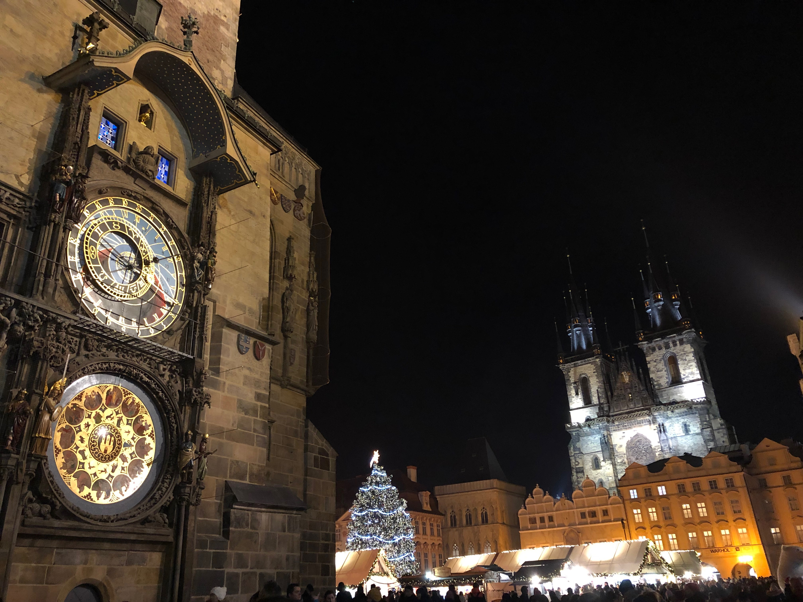
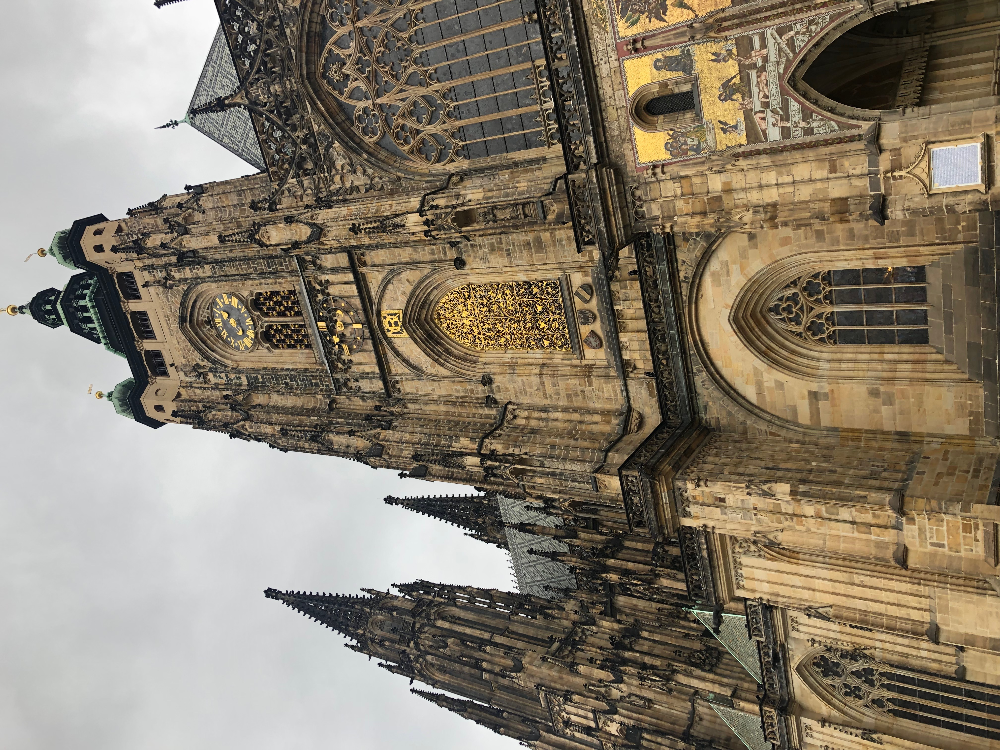
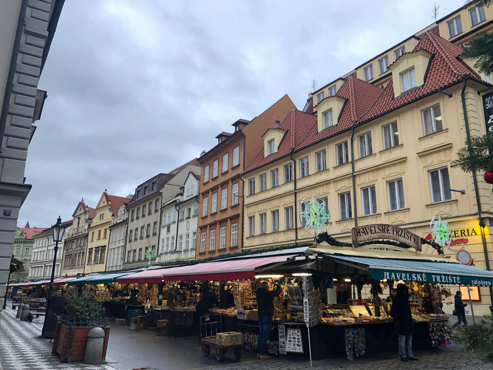
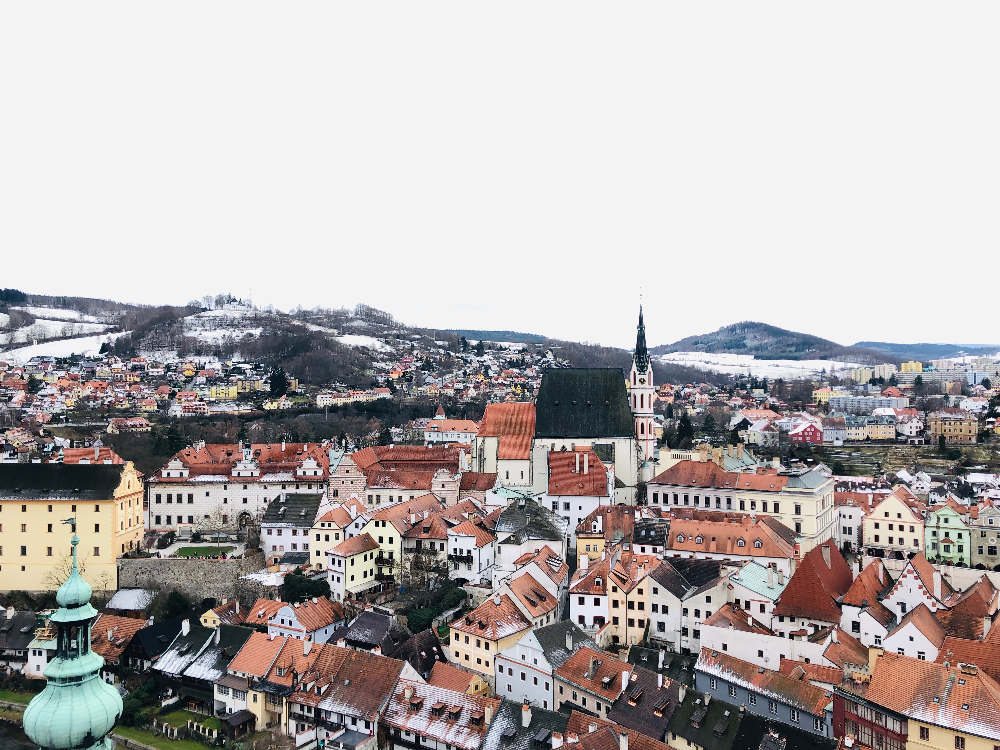

프라하 소개

체코의 수도
유럽 3대 야경 중 한 곳
유럽을 간다면 꼭 가봐야 하는 도시
관광지 1

프라하성
- 세계에서 가장 큰 성
- 죽기 전에 꼭 봐야 할 세계 역사 유적 중 하나
-
메트로 A선 Malostranská 역에서 프라하 성 후문인 동쪽 출입구까지 (도보 5분)
카를교에서 도보 10분
관광지 2

하벨시장
- 프라하의 구시가지와 신시가지를 잇는 곳에 위치
- 기념품 사기 좋은 곳. 야외 선물가게
- 메트로 A, B선 무스테크(Můstek) 역에서 (도보 3분) 바츨라프 광장을 등지고 이어지는 거리로, 구시가지 방향으로 가다 보면 나온다.
번외추천!

체스키크롬로프
- 체코 남보헤미아 주의 작은 도시
- 아름다운 풍경과, 문화재로 유명한 체스키크룸로프 성. 체코에서 두 번째로 큰 성이다.
- 프라하의 안델(Anděl)이나 플로렌츠(Florenc) 터미널로 가서 스튜던트 에이전시 사의 버스를 이용해서 갈 수 있다.